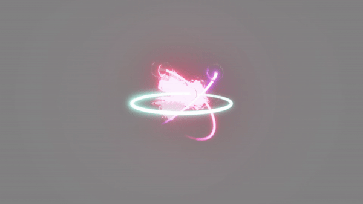
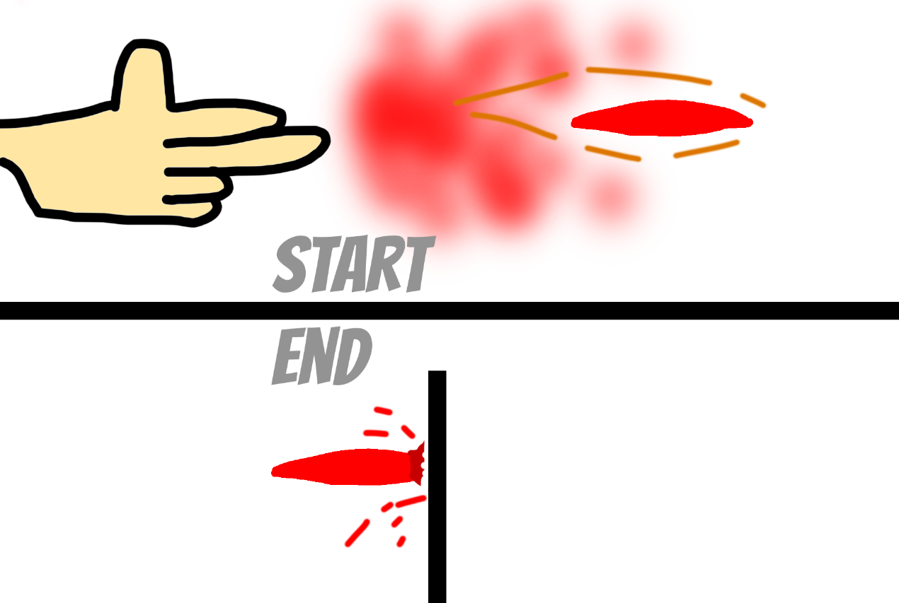
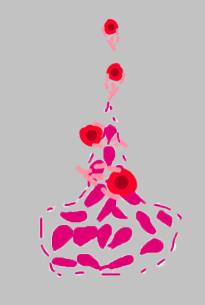
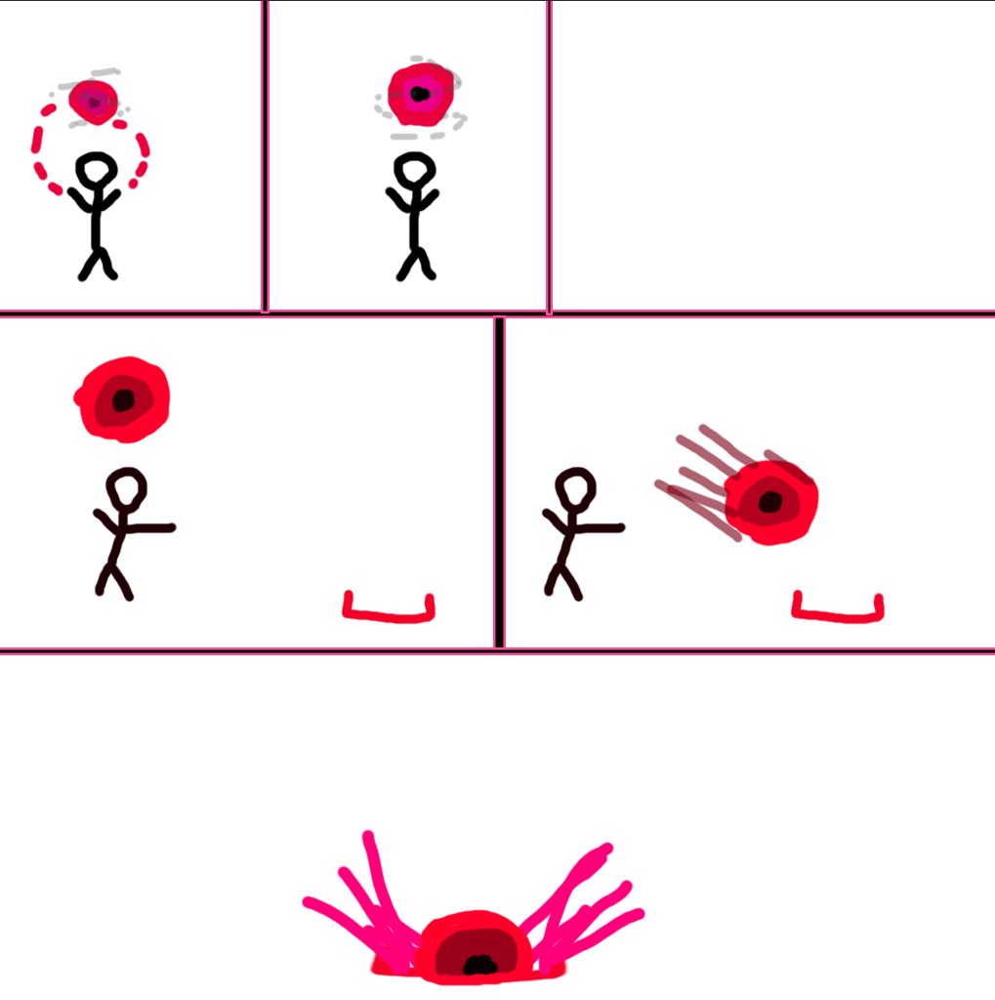

VFX Prototype (Oct - Nov 2024)

For my first semester in my second year, I needed to create a prototype showcasing new VFX skills inside Unreal Engine utilising its material system to create shaders and also the Niagara System to manage particles. I created these VFX based around a character I designed themed around dark magic inside a hero shooter similar to Marvel Rivals or Valorant. I created 4 abilities to be used by this character themed around how all the other characters for this game could be designed. The abilities include a primary and secondary weapon, ultimate move, and sub attack (bomb/grenade/etc).
Abilities
Primary Weapon
The primary projectile didn't need a lot of detail as it is supposed to happen very quickly but I needed it to be distinct and recognisable and so I designd an ability using a base mesh with a pulsing red texture to show off the dark magic. It moves quick so I also gave it a trail using a ribbon texture. There is also a minor explosion effect for when it hits a target.

Secondary Projectile
This projectile was more difficult to make as I intended to make it appear more powerful than the primary projectile and so I made it slightly bigger but also having a puff of smoke appear when the player spawns it. Spawning from the centre point of the projectile are other particles which have a vortex force applied to make them rotate around a circle in the opposite direction of the projectile movement. This made the projectile seem much more powerful to the player.

Magic Landmine
This projectile comes from a small idle mesh placed on the ground with a material shader making it look translucent. There are also some particles which spin around the centre and float upwards before fading away like a smoke effect.

Ultimate Attack
This attack spawns a small sphere above the player and it eventually gets bigger while shaking more and more before it reaches its tipping point targetting a given space in front of the player and then quickly moving towards it and creating a large explosion effect.

Demonstration
Download
Currently, I have not uploadeded a way to download this project.